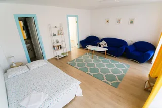
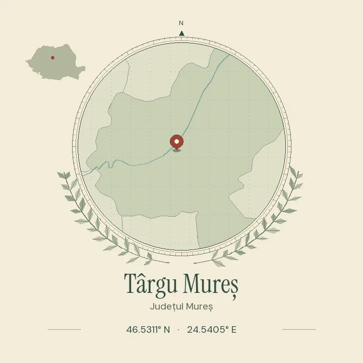
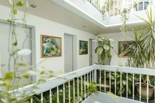
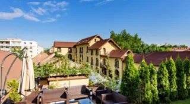
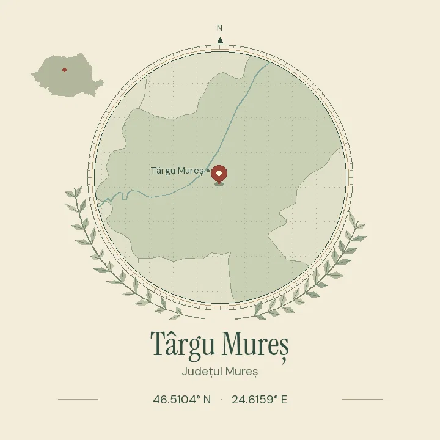
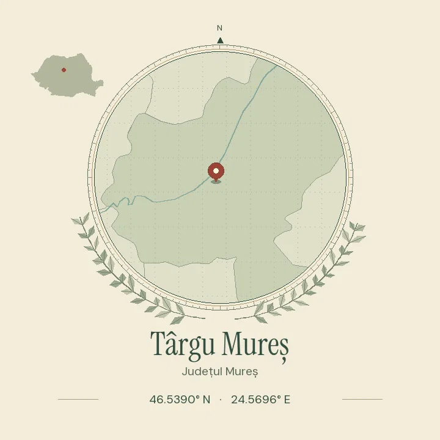
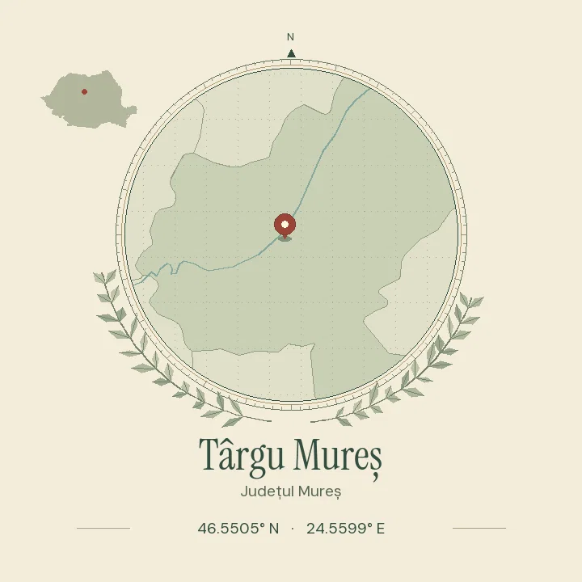
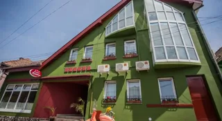
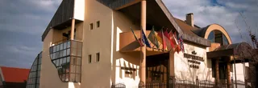
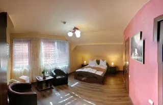

Locații de nuntă în Târgu Mureș
- locații în director
- 10
- cu cazare în registrul SITUR
- 8
- medie ponderată Google
- 4,6 / 5
- evaluări Google
- 5.214
Cum alegi o locație în Târgu Mureș
În Târgu Mureș poți începe comparația cu Pensiune Capra Vecinului (bed & breakfast), Pensiunea Elphin (pensiune), Villa Helvetia (cazare). Aceste proprietăți apar în primele poziții când luăm în calcul împreună nota și numărul de evaluări Google. Salvează adresele care vă interesează pentru a le așeza apoi alături în fișa de comparare a ofertelor.
În fișele proprietăților poți compara dotări concrete la Pensiune Capra Vecinului (grădină, terasă, cazare), Pensiunea Elphin (cazare, parcare gratuită, wi-fi gratuit). Pentru oferta de nuntă, întreabă ce spații și servicii dintre cele prezentate intră în rezervarea privată pentru data voastră.
Dacă vin rude de departe, Pensiunea Elphin are o unitate de cazare asociată în registrul SITUR. Înregistrarea pentru Elphin cuprinde 22 de locuri de dormit în 10 spații de cazare. Întreabă câte camere pot fi păstrate pentru aceeași noapte înainte să trimiți invitaților detaliile de rezervare.
Dacă vrei să vezi două proprietăți în aceeași zi, poți continua de la Pensiunea Koronka spre Pensiunea Sanda din Corunca. Punctele lor sunt la 0,8 km în linie dreaptă. Deschide traseul înainte să fixezi ora celei de-a doua vizite, mai ales dacă grupul se deplasează cu autocarul.
Locații pentru vizionare
Ordinea ține cont de nota Google și de numărul evaluărilor. Cum calculăm ordinea

Fotografie a locației · Sursa fotografiei Târgu Mureș · Bed & Breakfast
Pensiune Capra Vecinului
Pensiune Capra Vecinului, Târgu Mureș. Numele pensiunii din Târgu Mureș are, potrivit unui oaspete, o explicație cât se poate de literală.
Strada 22 Decembrie 1989 158B, 540124 Târgu Mureș+40 744 474 390
Hartă ilustrată Târgu Mureș · Pensiune
Pensiunea Elphin
Pensiunea Elphin, Târgu Mureș. La Elphin, un oaspete a întâlnit camere inspirate de pictori diferiți, între care Matisse, Dalí, Picasso și Klimt.
Strada Băneasa 35A, 540198 Târgu Mureș+40 799 672 212
Fotografie a locației · Sursa fotografiei Târgu Mureș · Cazare
Villa Helvetia
La Villa Helvetia, un oaspete descrie accesul în cameră pe baza indicațiilor trimise de gazdă și spune că a parcat într-o curte alăturată.
Municipiul, Strada Borsos Tamás 13, 540065 Târgu Mureș+40 744 870 220
Fotografie a locației · Sursa fotografiei Târgu Mureș · Pensiune
Pensiunea Passion
Pensiunea Passion, Târgu Mureș. Pentru camerele de la mansardă, cere informații despre urcare înainte de a le repartiza invitaților vârstnici.
Strada Gheorghe Doja 51, 540354 Târgu Mureș+40 725 215 607
Hartă ilustrată Târgu Mureș · Hotel
Pensiunea Koronka
Pensiunea Koronka, Târgu Mureș. La Koronka, un client care a revenit de mai multe ori laudă mai ales ciorba de burtă și porțiile generoase.
E60 397 H, 547367 Târgu Mureș+40 771 007 230
Hartă ilustrată Târgu Mureș · Bed & Breakfast
Pensiunea Europa
Pensiunea Europa. Merită să discutați cu gazda cum s-ar lega o întâmpinare pe terasă de masa din salon și ce parte rămâne deschisă celorlalți oaspeți.
Bulevardul 1 Decembrie 1918 97, 540445 Târgu Mureș+40 265 261 768
Hartă ilustrată Târgu Mureș · Bed & Breakfast
Pensiunea Noroc și Fericire
Pensiunea Noroc și Fericire. Pentru rudele care vin cu mașina și rămân la plimbare, aflați dacă parcarea se poate păstra și după eliberarea camerei.
Strada Mihai Eminescu, 540331 Târgu Mureș+40 745 764 658
Fotografie a locației · Sursa fotografiei Târgu Mureș · Pensiune
Pensiunea Cristina
Pentru Pensiunea Cristina din Târgu Mureș, o clientă a relatat că i-a fost greu să găsească pe cineva la recepție când a apărut o problemă noaptea.
Strada Piatra de Moară, Târgu Mureș+40 752 202 916
Fotografie a locației · Sursa fotografiei Târgu Mureș · Cazare
Pensiunea Imperial
Pensiunea Imperial, Târgu Mureș. Un vizitator de la Imperial descrie camera spațioasă și liniștită, urmată dimineața de un mic dejun tip bufet.
Strada Cornești 17, Târgu Mureș+40 365 404 936
Fotografie a locației · Sursa fotografiei Târgu Mureș · Hotel
Pensiunea Muresul
Pensiunea Muresul, Târgu Mureș. Strada Zăgazului 14 este adresa de trecut pe lista trimisă invitaților cazați la Pensiunea Mureșul.
Strada Zăgazului 14, Târgu Mureș+40 743 242 878
Întrebări despre locațiile din Târgu Mureș
Unde pot dormi invitații în Târgu Mureș?
În registrul de cazare SITUR găsim Pensiunea Elphin (22 de locuri de cazare), Villa Helvetia (22 de locuri de cazare), Pensiunea Passion (24 de locuri de cazare). Verifică ce camere sunt libere pentru noaptea evenimentului.
Ce proprietăți din Târgu Mureș au grădină sau terasă?
Pensiune Capra Vecinului (grădină, terasă, foișor); Pensiunea Passion (grădină, terasă); Pensiunea Koronka (terasă). Cere administratorului condițiile de folosire pentru o petrecere privată.
Care locație din Târgu Mureș are cele mai multe evaluări Google?
Pensiune Capra Vecinului are 1.247 de evaluări în profilul Google folosit la documentare. Evaluările acoperă și alte experiențe la proprietate, inclusiv vizitele fără eveniment.
Vizionări în apropiere
- Corunca · 2 locații. Între Pensiunea Koronka și Pensiunea Sanda sunt 0,8 km în linie dreaptă.
- Gornești · 1 locație. Între Pensiune Capra Vecinului și Castelul Teleki din Gornești sunt 12,6 km în linie dreaptă.
- Ogra · 1 locație. Între Pensiunea Elphin și Castel Haller sunt 19,1 km în linie dreaptă.